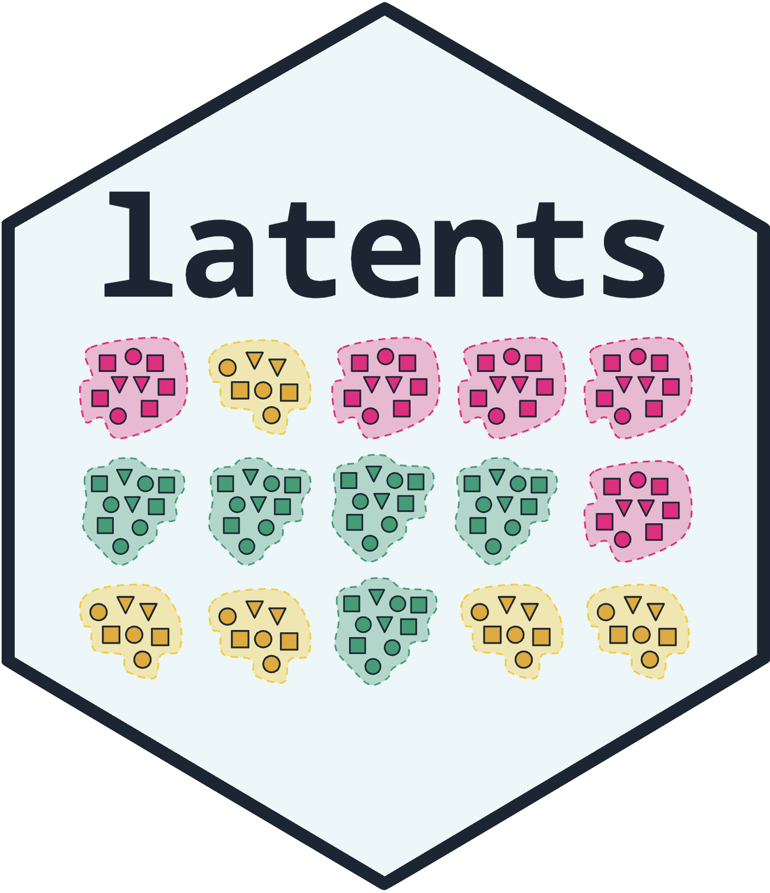

Plot how the profiles differ on the indicators: each profile's mean, or another summary, on every indicator
Source:R/plot-named.R
plot_profiles.Rdplot_profiles() plots how the profiles (classes) of a fitted model differ
on its indicators: by default one line per profile through its mean of each
indicator, with 95% intervals. what chooses another view of them.
Arguments
- x
A fitted model, or pooled imputations. What each draws:
a profile or class fit (
lpa(),lca(),multilpa(),multilca()): every view it has the indicators for;an
lta()fit:"lines", and, when its class ismultilpa_transitions,"bars","heatmap"and the views of its continuous indicators ("raincloud","parallel","pairs"), with each answered occasion a case; nothing when it has only count indicators ormeasurement = "occasion";a growth mixture or mixture regression:
"lines"only, each class's trajectory over time or fitted line over the first numeric predictor;an additive or cross-level fit:
"lines"only;pooled imputations (
pool_imputations()):"lines"only, the pooled means with their intervals beside each imputation's estimates.
- statistic
What
"lines"joins. It matters only for a profile, class ormultilpa_ltafit with only categorical or ordinal indicators:"mean"(default): the probability-weighted category score;"median": the first category where cumulative probability reaches 0.5;"mode": the most probable category.
- scale
"raw"(default) draws each indicator in its own units;"standardized"in observed standard deviations from the observed mean (continuous indicators only). For"lines","bars"and"raincloud"of profile, class andmultilpa_transitionsfits.- intervals
TRUE(default) draws the 95% intervals ofparameter_inference()on"lines"and"bars"of continuous indicators (the subtitle says why a fit has none);FALSEdraws none.- labels
TRUE(default) writes each profile's name at the end of its line;FALSEuses a legend instead. Forwhat = "lines".- data
The data frame the model was fitted to, used only to compute the intervals.
NULL(default) uses the data stored in the fit.- main, subtitle
Title and subtitle of the plot, each one string;
NULL(default) keeps the view's own.- what
Which view to draw. The linked pages say what a view needs:
"lines"(default): each profile's mean of every indicator, joined;"bars": the same means as bars (plot_bars());"heatmap": the means in standard deviations (plot_heatmap());"raincloud": each indicator's distribution (plot_raincloud());"parallel": every case as a line, by profile (plot_parallel());"pairs": the cases in every pair of indicators (plot_pairs());"all": every view the fit supports, as a list.
Value
A ggplot object; for what = "all" a latents_plots list of the
views the fit can draw, named by view (a message names the others).
Errors: latents_nothing_to_plot (the fit has no such view),
latents_no_continuous (too few continuous indicators),
latents_bad_argument (an argument no view of the fit takes, or
"lines" for category labels that are not numbers), latents_not_a_fit.
An argument of another view gives a latents_unused_argument warning.
See also
plot_responses() for categorical indicators; plot_all().